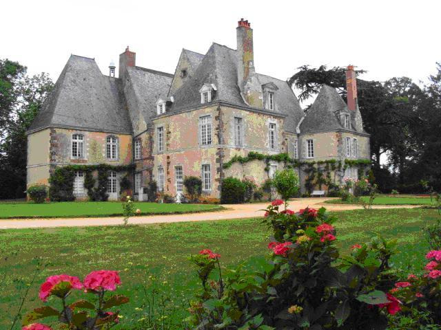

Un site géographique exceptionnel en Sarthe
Le château a été construit sur un site dominant la vallée de la Vègre, petite rivière de charme, affluent de la Sarthe.
Une imbrication de bâtiments

Hors les fondations, les parties les plus anciennes datent du XVème siècle (meurtrières, archères).
Un premier bâtiment s’est vu adjoindre un second corps de logis bâti parallèlement, l’ensemble dressant ses hauts pignons. Cette architecture est exceptionnelle car les bâtiments s’encastrent les uns dans les autres, et les charpentes plus encore.
Au XVIème siècle, au gré des besoins, ces deux corps de logis jumeaux ont été encadrés de manière symétrique par deux pavillons carrés à haute cheminée. La façade sur le parc a été remaniée au XVIIème, percée de fenêtres et couronnées de lucarnes à fronton.
Un entrepreneur du XVIIIème siècle à Martigné
Gabriel Chenon du Boulay fut le seigneur du lieu qui remania l’ensemble au cours du XVIIIème siècle pour lui donner sa physionomie actuelle qui n’a pas changé depuis. Maître de Forge, anobli, il mourut sans héritier en 1791. Le château fut vendu en bien national et partagé entre plusieurs propriétaires. Il fut de nouveau ré unifié en 1807.
Sous l’ancien régime, l’ensemble était un vaste domaine comprenant fermes, moulins, dépendances, terres et bois.